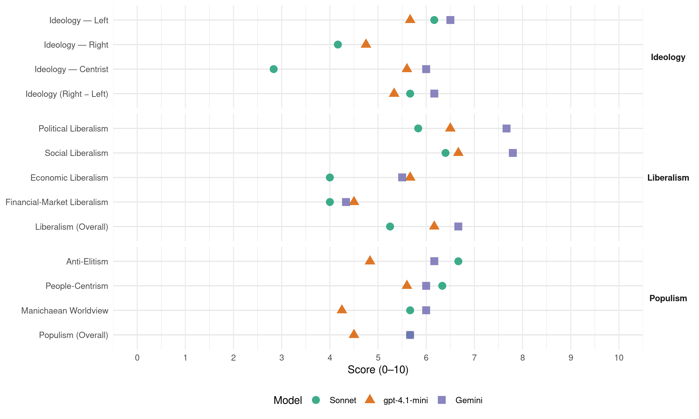

BQ (Canada, 2006)
manifesto_id 62901_200601
Get full text: This site shows derived annotations and short verbatim quotes only. The full manifesto text is © Manifesto Project / WZB — obtain it via manifesto-project.wzb.eu using the manifesto_id above.
Headline scores
| Dimension | Sonnet | gpt-4.1-mini | Gemini |
|---|---|---|---|
| Populism (Overall) | 5.7 | 4.5 | 5.7 |
| Anti-Elitism | 6.7 | 4.8 | 6.2 |
| People-Centrism | 6.3 | 5.6 | 6.0 |
| Manichaean Worldview | 5.7 | 4.2 | 6.0 |
| Ideology (Right − Left) | 5.7 | 5.3 | 6.2 |
| Liberalism (Overall) | 5.2 | 6.2 | 6.7 |
| Political Liberalism | 5.8 | 6.5 | 7.7 |
| Social Liberalism | 6.4 | 6.7 | 7.8 |
| Economic Liberalism | 4.0 | 5.7 | 5.5 |
| Financial-Market Liberalism | 4.0 | 4.5 | 4.3 |
Evidence per dimension
Economic Liberalism
Gemini · score 5.0 · mixed · chunk 2
“favorable à l’ouverture des frontières au commerce international”
Le Bloc Québécois est favorable à l’ouverture des frontières au commerce international. Le Québec, nation commerçante, a besoin de cet accès
Gemini · score 5.0 · mixed · chunk 3
“favorable à l’ouverture des frontières au commerce international”
Pour une mondialisation équitable Le Bloc Québécois est favorable à l’ouverture des frontières au commerce international. Le Québec, nation commerçante, a besoin de cet accès
Gemini · score 4.0 · verified · chunk 4
“le recours aux briseurs de grève sera interdit”
retrait préventif rémunéré et le recours aux briseurs de grève sera interdit à toutes les entreprises.
Gemini · score 7.0 · verified · chunk 5
“conclure une entente de libre-échange”
Le Québec souverain pourra, par exemple, conclure une entente de libre-échange avec l’Union européenne
Gemini · score 5.0 · mixed · chunk 6
“l’ouverture au commerce et la création de règles”
L’ouverture au commerce et la création de règles internationales pour contrer le protectionnisme et protéger les investissements sont de bonnes choses
gpt-4.1-mini · score 7.0 · verified · chunk 1
“le Québec possède un potentiel hydroélectrique encore très vaste”
Le Québec a un potentiel hydroélectrique encore très vaste. Ce potentiel permettrait à Hydro-Québec d’augmenter considérablement sa production hydroélectrique, une source d’énergie propre.
gpt-4.1-mini · score 5.0 · verified · chunk 2
“le gouvernement fédéral a multiplié les intrusions en recherche et en éducation”
Depuis 1997-1998, le gouvernement fédéral a multiplié les intrusions en recherche et en éducation, pourtant une responsabilité exclusive du gouvernement du Québec. Parmi ces intrusions, notons les Bourses du millénaire, la Fondation pour l’innovation et les Chaires de recherche du Canada.
gpt-4.1-mini · score 5.0 · verified · chunk 3
“Le Bloc Québécois s’oppose à toute fusion entre les grandes banques canadiennes”
Le projet de fusion des banques Étant donné la concentration déjà très forte du secteur bancaire au Canada, le Bloc Québécois s’est opposé à toute fusion entre les grandes banques canadiennes, à moins qu’elles fassent la démonstration devant les comités parlementaires concernés que cela va dans le sens de l’intérêt public.
gpt-4.1-mini · score 5.0 · verified · chunk 4
“le gouvernement fédéral n’a contribué qu’à hauteur de 2,7 % du total des dépenses en immobilisation”
Alors que les Québécois paient près de la moitié de leurs impôts au gouvernement fédéral, ce dernier n’a contribué qu’à hauteur de 2,7 % du total des dépenses en immobilisation (bâtiments, routes, ponts, ports, etc.) entre 1999 et 2001 au Québec.
gpt-4.1-mini · score 6.0 · verified · chunk 5
“le Bloc Québécois propose que le gouvernement fédéral favorise la création d’emplois dans les régions ressources”
…Le Bloc Québécois propose que le gouvernement fédéral favorise la création d’emplois dans les régions ressources et accorde aux entreprises de deuxième et troisième transformation de ces régions un crédit d’impôt équivalant à 30 % de l’augmentation de leur masse salariale. Le Bloc Québécois propose de plus que le gouvernement fédéral favorise le développement des PME manufacturières dans les régions ressources en leur offrant un congé fiscal équivalant à 50 % de leur impôt sur le revenu.
gpt-4.1-mini · score 6.0 · verified · chunk 6
“l’ouverture au commerce et la création de règles internationales”
L’ouverture au commerce et la création de règles internationales pour contrer le protectionnisme et protéger les investissements sont de bonnes choses auxquelles le Bloc Québécois adhère.
Sonnet · score 4.0 · verified · chunk 1
“surtaxe sur les profits des grandes pétrolières”
Ce fonds pourra être financé à partir des exportations d’énergie propre et d’une surtaxe sur les profits des grandes pétrolières oeuvrant sur le territoire québécois.
Sonnet · score 4.0 · verified · chunk 2
“favorable à l’ouverture des frontières au commerce international”
Le Bloc Québécois est favorable à l’ouverture des frontières au commerce international. Le Québec, nation commerçante, a besoin de cet accès au monde
Sonnet · score 4.0 · mixed · chunk 3
“favorable à l’ouverture des frontières au commerce international”
Le Bloc Québécois est favorable à l’ouverture des frontières au commerce international. Le Québec, nation commerçante, a besoin de cet accès au monde sans lequel nos industries de pointe ne pourraient pas prospérer. Or, pour que les échanges commerciaux soient mutuellement profitables, ils doivent d’abord être équitables.
Sonnet · score 4.0 · verified · chunk 4
“baisses d’impôt des contribuables annoncées”
C’est la raison pour laquelle il appuie les récentes baisses d’impôt des contribuables annoncées dans la dernière mise à jour économique.
Sonnet · score 5.0 · mixed · chunk 5
“gestion de l’offre n’est pas négociable”
la gestion de l’offre n’est pas négociable. C’est pourquoi le Bloc Québécois a fait voter une motion devant la Chambre des communes, le 15 avril dernier, exigeant du gouvernement fédéral qu’il ne fasse aucune concession
Sonnet · score 5.0 · mixed · chunk 6
“L’ouverture au commerce et la création de règles internationales”
L’ouverture au commerce et la création de règles internationales pour contrer le protectionnisme et protéger les investissements sont de bonnes choses auxquelles le Bloc Québécois adhère. Cela ne signifie pas que les règles commerciales doivent avoir préséance sur le bien commun
Financial-Market Liberalism
Gemini · score 6.0 · verified · chunk 2
“crédits domestiques émis dans le cadre du Protocole de Kyoto à la Bourse de Montréal”
Le Bloc Québécois propose également au gouvernement fédéral d’inscrire les crédits domestiques émis dans le cadre du Protocole de Kyoto à la Bourse de Montréal qui bénéficie déjà d’une expertise
Gemini · score 3.0 · verified · chunk 3
“s’opposé à toute fusion entre les grandes banques canadiennes”
Étant donné la concentration déjà très forte du secteur bancaire au Canada, le Bloc Québécois s’est opposé à toute fusion entre les grandes banques canadiennes, à moins qu’elles fassent la démonstration
Gemini · score 4.0 · verified · chunk 6
“décisions du FMI sont davantage dictées par des intérêts”
Il faut souligner que les décisions du FMI sont davantage dictées par des intérêts financiers particuliers que par le bien commun.
gpt-4.1-mini · score 6.0 · verified · chunk 1
“le gouvernement fédéral a transféré 9 milliards $ dans les fondations qu’il a créées”
Au cours des sept dernières années, le gouvernement fédéral a transféré 9 milliards $ dans les fondations qu’il a créées. De ce montant, 7, 7 milliards $ dorment toujours dans des comptes bancaires, alors que le gouvernement fédéral persiste à nier l’existence du déséquilibre fiscal.
gpt-4.1-mini · score 4.0 · verified · chunk 3
“le gouvernement fédéral devrait revoir sa politique sur les frais de transferts des navires”
Or, comme tous les navires militaires de l’Est sont situés à Halifax, les chantiers des provinces maritimes sont systématiquement privilégiés au détriment des chantiers québécois. Étant donné qu’en matière d’approvisionnement la responsabilité du gouvernement fédéral est double : favoriser le développement régional et obtenir la meilleure valeur pour les contribuables en s’assurant qu’il y ait assez de constructeurs navals pour assurer une saine concurrence, le Bloc Québécois croit qu’au nom de l’équité, le gouvernement fédéral devrait revoir sa politique sur les frais de transferts des navires.
gpt-4.1-mini · score 2.0 · verified · chunk 4
“les paradis fiscaux de Paul Martin”
Le gouvernement libéral de Paul Martin a érigé en système l’utilisation par les plus riches des paradis fiscaux, un moyen de se soustraire à l’obligation morale de payer sa juste part des impôts qui servent à financer les routes, les hôpitaux, les écoles ou les pensions destinées aux personnes âgées.
gpt-4.1-mini · score 6.0 · verified · chunk 6
“la révision des conventions fiscales dans le but de mettre fin à l’utilisation des paradis fiscaux”
la modification des règles et la révision des conventions fiscales dans le but de mettre fin à l’utilisation des paradis fiscaux permettront des rentrées fiscales minimales de 1, 85 milliard $ en trois ans.
Sonnet · score 5.0 · verified · chunk 1
“bourse de permis échangeables”
des représentants de la Bourse de Montréal ont proposé la création d’une bourse de permis échangeables dans le cadre du Protocole de Kyoto. Le Bloc Québécois propose l’implantation d’une telle bourse.
Sonnet · score 5.0 · verified · chunk 2
“inscrire les crédits domestiques émis dans le cadre du Protocole de Kyoto à la Bourse de Montréal”
Le Bloc Québécois propose également au gouvernement fédéral d’inscrire les crédits domestiques émis dans le cadre du Protocole de Kyoto à la Bourse de Montréal qui bénéficie déjà d’une expertise réputée dans les produits dérivés.
Sonnet · score 3.0 · verified · chunk 3
“s’est opposé à toute fusion entre les grandes banques canadiennes”
Étant donné la concentration déjà très forte du secteur bancaire au Canada, le Bloc Québécois s’est opposé à toute fusion entre les grandes banques canadiennes, à moins qu’elles fassent la démonstration devant les comités parlementaires concernés que cela va dans le sens de l’intérêt public.
Sonnet · score 3.0 · verified · chunk 4
“paradis fiscaux de Paul Martin”
Les paradis fiscaux de Paul Martin Le gouvernement libéral de Paul Martin a érigé en système l’utilisation par les plus riches des paradis fiscaux
Sonnet · score 4.0 · verified · chunk 5
“programme de garanties de prêts”
un programme de garanties de prêts pour permettre aux entreprises d’éviter la faillite. Par ce programme, le gouvernement accepterait de prendre en garantie les quelque 5 milliards $ en droits compensateurs
Sonnet · score 4.0 · verified · chunk 6
“mettre fin à l’utilisation des paradis fiscaux”
la modification des règles et la révision des conventions fiscales dans le but de mettre fin à l’utilisation des paradis fiscaux permettront des rentrées fiscales minimales de 1, 85 milliard $ en trois ans.
Political Liberalism
Gemini · score 8.0 · verified · chunk 1
“La démocratie parlementaire québécoise remonte à 1792”
Les valeurs démocratiques des Québécoises et des Québécois ont de profondes racines dans l’histoire. La démocratie parlementaire québécoise remonte à 1792 et au Parlement du Bas-Canada.
Gemini · score 7.0 · verified · chunk 2
“dans le respect de ses compétences”
poursuivre sa bataille pour que le Québec reçoive, dans le respect de ses compétences, sa juste part des dépenses
Gemini · score 8.0 · verified · chunk 3
“violations aux droits et libertés fondamentales qui sont à la base même d’une société démocratique”
Le Bloc Québécois veut trouver des solutions pour assurer la sécurité des citoyens sans toutefois perpétuer ces violations aux droits et libertés fondamentales qui sont à la base même d’une société démocratique.
Gemini · score 7.0 · verified · chunk 4
“les piliers des sociétés démocratiques, soit les droits et les libertés”
terroriser des populations en commettant des actes retentissants et à ébranler les piliers des sociétés démocratiques, soit les droits et les libertés. Restreindre exagérément
Gemini · score 8.0 · verified · chunk 5
“les traités internationaux soient soumis pour approbation”
démocratiser la pratique des affaires étrangères en s’assurant: que les traités internationaux soient soumis pour approbation à l’Assemblée nationale
Gemini · score 8.0 · verified · chunk 6
“démocratiser la pratique des affaires étrangères”
Le Québec souverain pourra démocratiser la pratique des affaires étrangères en s’assurant: que les traités internationaux soient soumis
gpt-4.1-mini · score 8.0 · verified · chunk 1
“La démocratie parlementaire québécoise remonte à 1792 et au Parlement du Bas-Canada”
La démocratie parlementaire québécoise remonte à 1792 et au Parlement du Bas-Canada. Certains épisodes de cette histoire montrent bien que les valeurs démocratiques québécoises sont solidement ancrées depuis longtemps.
gpt-4.1-mini · score 6.0 · verified · chunk 2
“le gouvernement fédéral refuse de tenir compte des efforts passés du Québec”
Le Québec a le meilleur bilan au Canada en matière d’émissions de GES. Le graphique suivant en fait l’éloquente démonstration. Ce n’est pas seulement le choix de l’hydroélectricité qui a permis au Québec d’afficher un tel bilan, ce sont des efforts constants, depuis 1990, du gouvernement du Québec, des industries comme les papetières et des citoyens (qui ont par exemple combattu l’idée de construire la centrale du Suroît). Or, le gouvernement fédéral refuse de tenir compte des efforts passés du Québec.
gpt-4.1-mini · score 6.0 · verified · chunk 3
“le Bloc Québécois dénonce le laxisme du gouvernement fédéral devant la situation du français dans la fonction publique”
Le Bloc Québécois dénonce le laxisme du gouvernement fédéral devant la situation du français dans la fonction publique et exige immédiatement du gouvernement que les candidats à un poste désigné bilingue répondent, et ce dès leur embauche, aux exigences linguistiques du poste convoité.
gpt-4.1-mini · score 6.0 · verified · chunk 4
“la sécurité ne doit en aucun cas prendre le pas sur les droits et libertés”
Le Bloc Québécois se préoccupe de la sécurité au Québec et au Canada, mais en gardant à l’esprit que la sécurité ne doit en aucun cas prendre le pas sur les droits et libertés. Le terrorisme, comme le mot l’indique, consiste à terroriser des populations en commettant des actes retentissants et à ébranler les piliers des sociétés démocratiques, soit les droits et les libertés.
gpt-4.1-mini · score 6.0 · verified · chunk 5
“les traités internationaux soient soumis pour approbation à l’Assemblée nationale”
…Le Québec souverain pourra démocratiser la pratique des affaires étrangères en s’assurant: que les traités internationaux soient soumis pour approbation à l’Assemblée nationale et, dans certains cas majeurs, qu’ils fassent l’objet d’une consultation populaire; que tout envoi de troupes québécoises à l’étranger soit soumis à l’approbation de l’Assemblée nationale; que, en application du modèle québécois de concertation, soient constituées des tables rondes permanentes avec la société civile sur les questions d’affaires étrangères, de commerce international, de sécurité et de développement international; que le gouvernement crée un observatoire de la mondialisation et suscite la création d’un réseau international d’observatoires qui pourrait, fort de l’expérience acquise par les différents pays, permettre au Québec de mieux réagir face aux défis mondiaux auxquels il est confronté.
gpt-4.1-mini · score 7.0 · verified · chunk 6
“les traités internationaux soient soumis pour approbation à l’Assemblée nationale”
Le Québec souverain pourra démocratiser la pratique des affaires étrangères en s’assurant: que les traités internationaux soient soumis pour approbation à l’Assemblée nationale.
Sonnet · score 6.0 · verified · chunk 1
“La démocratie est une valeur fondamentale”
La démocratie est une valeur fondamentale de l’action politique du Bloc Québécois. L’Assemblée nationale du Québec
Sonnet · score 5.0 · verified · chunk 2
“dans ses propres champs de compétence”
le Bloc Québécois demandera au prochain gouvernement fédéral de mettre de l’avant, dans ses propres champs de compétence, des mesures véritablement efficaces pour lutter contre les changements climatiques.
Sonnet · score 5.0 · verified · chunk 3
“violations aux droits et libertés fondamentales qui sont à la base même d’une société démocratique”
Le Bloc Québécois veut trouver des solutions pour assurer la sécurité des citoyens sans toutefois perpétuer ces violations aux droits et libertés fondamentales qui sont à la base même d’une société démocratique.
Sonnet · score 6.0 · verified · chunk 4
“sécurité ne doit en aucun cas prendre le pas sur les droits et libertés”
le Bloc Québécois se préoccupe de la sécurité au Québec et au Canada, mais en gardant à l’esprit que la sécurité ne doit en aucun cas prendre le pas sur les droits et libertés
Sonnet · score 6.0 · verified · chunk 5
“traités internationaux soient soumis pour approbation”
Le Québec souverain pourra démocratiser la pratique des affaires étrangères en s’assurant: que les traités internationaux soient soumis pour approbation à l’Assemblée nationale
Sonnet · score 7.0 · verified · chunk 6
“les traités internationaux soient soumis pour approbation à l’Assemblée nationale”
Le Québec souverain pourra démocratiser la pratique des affaires étrangères en s’assurant: que les traités internationaux soient soumis pour approbation à l’Assemblée nationale et, dans certains cas majeurs, qu’ils fassent l’objet d’une consultation populaire
Liberalism (Overall)
Gemini · score 8.0 · verified · chunk 1
“La démocratie parlementaire québécoise remonte à 1792”
Les valeurs démocratiques des Québécoises et des Québécois ont de profondes racines dans l’histoire. La démocratie parlementaire québécoise remonte à 1792 et au Parlement du Bas-Canada.
Gemini · score 6.0 · verified · chunk 2
“favorable à l’ouverture des frontières au commerce international”
Le Bloc Québécois est favorable à l’ouverture des frontières au commerce international. Le Québec, nation commerçante, a besoin de cet accès
Gemini · score 6.0 · verified · chunk 3
“violations aux droits et libertés fondamentales qui sont à la base même d’une société démocratique”
Le Bloc Québécois veut trouver des solutions pour assurer la sécurité des citoyens sans toutefois perpétuer ces violations aux droits et libertés fondamentales qui sont à la base même d’une société démocratique.
Gemini · score 6.0 · verified · chunk 4
“les piliers des sociétés démocratiques, soit les droits et les libertés”
terroriser des populations en commettant des actes retentissants et à ébranler les piliers des sociétés démocratiques, soit les droits et les libertés. Restreindre exagérément
Gemini · score 8.0 · verified · chunk 5
“les traités internationaux soient soumis pour approbation”
démocratiser la pratique des affaires étrangères en s’assurant: que les traités internationaux soient soumis pour approbation à l’Assemblée nationale
Gemini · score 6.0 · verified · chunk 6
“protéger les libertés fondamentales ou les droits”
pour faire avancer les droits du travail ou de l’environnement, pour protéger les libertés fondamentales ou les droits humains
gpt-4.1-mini · score 7.0 · verified · chunk 1
“La démocratie parlementaire québécoise remonte à 1792 et au Parlement du Bas-Canada”
La démocratie parlementaire québécoise remonte à 1792 et au Parlement du Bas-Canada. Certains épisodes de cette histoire montrent bien que les valeurs démocratiques québécoises sont solidement ancrées depuis longtemps.
gpt-4.1-mini · score 6.0 · verified · chunk 2
“le gouvernement fédéral refuse de tenir compte des efforts passés du Québec”
Le Québec a le meilleur bilan au Canada en matière d’émissions de GES. Le graphique suivant en fait l’éloquente démonstration. Ce n’est pas seulement le choix de l’hydroélectricité qui a permis au Québec d’afficher un tel bilan, ce sont des efforts constants, depuis 1990, du gouvernement du Québec, des industries comme les papetières et des citoyens (qui ont par exemple combattu l’idée de construire la centrale du Suroît). Or, le gouvernement fédéral refuse de tenir compte des efforts passés du Québec.
gpt-4.1-mini · score 6.0 · verified · chunk 3
“Le Bloc Québécois dénonce le laxisme du gouvernement fédéral devant la situation du français dans la fonction publique”
Le Bloc Québécois dénonce le laxisme du gouvernement fédéral devant la situation du français dans la fonction publique et exige immédiatement du gouvernement que les candidats à un poste désigné bilingue répondent, et ce dès leur embauche, aux exigences linguistiques du poste convoité.
gpt-4.1-mini · score 5.0 · verified · chunk 4
“le gouvernement fédéral n’a contribué qu’à hauteur de 2,7 % du total des dépenses en immobilisation”
Alors que les Québécois paient près de la moitié de leurs impôts au gouvernement fédéral, ce dernier n’a contribué qu’à hauteur de 2,7 % du total des dépenses en immobilisation (bâtiments, routes, ponts, ports, etc.) entre 1999 et 2001 au Québec.
gpt-4.1-mini · score 6.0 · verified · chunk 5
“le Bloc Québécois propose que le gouvernement fédéral favorise la création d’emplois dans les régions ressources”
…Le Bloc Québécois propose que le gouvernement fédéral favorise la création d’emplois dans les régions ressources et accorde aux entreprises de deuxième et troisième transformation de ces régions un crédit d’impôt équivalant à 30 % de l’augmentation de leur masse salariale. Le Bloc Québécois propose de plus que le gouvernement fédéral favorise le développement des PME manufacturières dans les régions ressources en leur offrant un congé fiscal équivalant à 50 % de leur impôt sur le revenu.
gpt-4.1-mini · score 7.0 · verified · chunk 6
“le respect des droits de la personne”
Le Bloc Québécois prône une mondialisation à visage humain et la conclusion d’accords commerciaux qui tiennent compte des aspects sociaux, culturels, humains et environnementaux.
Sonnet · score 5.0 · verified · chunk 1
“transparence financière”
La transparence financière Les gouvernements ont le devoir de gérer les fonds publics et de prendre leurs décisions en toute transparence.
Sonnet · score 5.0 · verified · chunk 2
“favorable à l’ouverture des frontières au commerce international”
Le Bloc Québécois est favorable à l’ouverture des frontières au commerce international. Le Québec, nation commerçante, a besoin de cet accès au monde
Sonnet · score 5.0 · mixed · chunk 3
“favorable à l’ouverture des frontières au commerce international”
Le Bloc Québécois est favorable à l’ouverture des frontières au commerce international. Le Québec, nation commerçante, a besoin de cet accès au monde sans lequel nos industries de pointe ne pourraient pas prospérer.
Sonnet · score 5.0 · verified · chunk 4
“juste équilibre entre sécurité et liberté”
toute mesure de lutte contre le terrorisme devait proposer un juste équilibre entre sécurité et liberté.
Sonnet · score 5.0 · mixed · chunk 5
“conclure une entente de libre-échange avec l’Union européenne”
Il pourra établir de nouveaux partenariats avec les autres pays et intégrer, voire susciter, de nouvelles alliances. Le Québec souverain pourra, par exemple, conclure une entente de libre-échange avec l’Union européenne
Sonnet · score 6.0 · verified · chunk 6
“primauté du droit, multilatéralisme comme fondement de l’ordre international”
Le Bloc Québécois aurait souhaité que la politique étrangère repose sur un certain nombre de principes: primauté du droit, multilatéralisme comme fondement de l’ordre international, lutte à la pauvreté, respect des droits de la personne
Anti-Elitism
Gemini · score 8.0 · verified · chunk 1
“le gouvernement fédéral a utilisé une partie de ces impôts pour multiplier les dépenses bureaucratiques, le gaspillage et la corruption”
le gouvernement fédéral est trop riche par rapport à ses responsabilités. Ce qui fait que les impôts des Québécoises et des Québécois ne sont pas utilisés pour répondre à leurs priorités. Ainsi, le gouvernement fédéral a utilisé une partie de ces impôts pour multiplier les dépenses bureaucratiques, le gaspillage et la corruption, pendant que le gouvernement du Québec manque de moyens
Gemini · score 6.0 · verified · chunk 2
“privilégier les intérêts de quelques amis du régime”
Les libéraux, on le sait, privilégier trop souvent les intérêts de quelques amis du régime au détriment de ceux de la majorité.
Gemini · score 7.0 · verified · chunk 3
“privilégient trop souvent les intérêts de quelques amis du régime”
La fiscalité fédérale menace les micro-brasseries québécoises Les libéraux, on le sait, privilégient trop souvent les intérêts de quelques amis du régime au détriment de ceux de la majorité.
Gemini · score 7.0 · verified · chunk 4
“en pillant ces surplus, année après année”
Elle affirme également que le gouvernement n’a pas respecté l’esprit de la Loi sur l’assurance-emploi en pillant ces surplus, année après année. Les victimes de ce détournement
Gemini · score 5.0 · verified · chunk 5
“ce véritable détournement de fonds”
les réformes de l’assurance-emploi. Ce véritable détournement de fonds a également causé un tort considérable
Gemini · score 4.0 · verified · chunk 6
“navrante tentative de diversion destinée à détourner”
L’exercice n’aura été, au bout du compte, qu’une navrante tentative de diversion destinée à détourner l’attention du public en plein scandale des commandites.
gpt-4.1-mini · score 8.0 · verified · chunk 1
“le Parti libéral du Canada a transgressé les règles démocratiques”
Depuis que le juge Gomery a déposé son rapport au sujet du scandale des commandites, nous savons que le Parti libéral du Canada a transgressé les règles démocratiques en détournant des fonds publics – notre argent – au profit de sa caisse électorale.
gpt-4.1-mini · score 3.0 · verified · chunk 2
“le gouvernement fédéral persiste à soutenir financièrement l’industrie des hydrocarbures”
l’OCDE recommandait la suppression des subventions préjudiciables à l’environnement comme celles aux combustibles fossiles en mentionnant qu’elles « devraient être supprimées dans la mesure où elles risquent d’entraîner une surexploitation ou une surconsommation des ressources ou d’avoir des conséquences négatives pour l’environnement ». Malgré cet avertissement, le gouvernement fédéral persiste à soutenir financièrement l’industrie des hydrocarbures comme ce fut le cas au cours des 30 dernières années.
gpt-4.1-mini · score 3.0 · verified · chunk 3
“les libéraux, on le sait, privilégient trop souvent les intérêts de quelques amis du régime”
La fiscalité fédérale menace les micro-brasseries québécoises Les libéraux, on le sait, privilégient trop souvent les intérêts de quelques amis du régime au détriment de ceux de la majorité. Le dossier des micro-brasseries, dont la fiscalité fédérale freine le développement au profit des grands brasseurs, en est un exemple.
gpt-4.1-mini · score 7.0 · verified · chunk 4
“le gouvernement libéral de Paul Martin a violé ces deux règles fondamentales”
Le premier devoir d’un gouvernement est de respecter les lois qu’il a lui-même adoptées. Le deuxième, c’est de ne pas s’approprier ce qui ne lui appartient pas. Le gouvernement libéral de Paul Martin a violé ces deux règles fondamentales en s’emparant des surplus de la caisse d’assurance-emploi.
gpt-4.1-mini · score 3.0 · verified · chunk 5
“le gouvernement fédéral ne semble guère préoccupé”
…problèmes majeurs de corrosion sont de plus en plus inquiétants. Pourtant, le gouvernement fédéral ne semble guère préoccupé par la décrépitude de ce joyau du patrimoine québécois, rejetant la responsabilité de l’entretien sur le CN. Pourtant, dans son rapport de novembre 2005, la vérificatrice générale écrivait : «Transports Canada se doit de prendre des mesures qui assureront la viabilité à long terme du Pont de Québec. » C’est pourquoi le Bloc Québécois exigera du gouvernement fédéral qu’il entreprenne les démarches nécessaires afin que la rénovation du Pont de Québec soit terminée avant 2008.
gpt-4.1-mini · score 5.0 · verified · chunk 6
“le gouvernement fédéral ne freinait pas son développement”
Si le gouvernement fédéral ne freinait pas son développement, le potentiel de ce secteur économique serait énorme.
Sonnet · score 8.0 · verified · chunk 1
“le Parti libéral du Canada s’est déshonoré et a « trahi »la confiance”
Aux dires du juge Gomery, le Parti libéral du Canada s’est déshonoré et a « trahi »la confiance de la population dans son régime de gouvernement.
Sonnet · score 6.0 · verified · chunk 2
“les libéraux, on le sait, privilégient trop souvent les intérêts de quelques amis du régime”
La fiscalité fédérale menace les micro-brasseries québécoises. Les libéraux, on le sait, privilégient trop souvent les intérêts de quelques amis du régime au détriment de ceux de la majorité.
Sonnet · score 7.0 · verified · chunk 3
“les libéraux, on le sait, privilégient trop souvent les intérêts de quelques amis du régime”
La fiscalité fédérale menace les micro-brasseries québécoises: Les libéraux, on le sait, privilégient trop souvent les intérêts de quelques amis du régime au détriment de ceux de la majorité.
Sonnet · score 7.0 · verified · chunk 4
“gouvernement libéral de Paul Martin a érigé en système”
Le gouvernement libéral de Paul Martin a érigé en système l’utilisation par les plus riches des paradis fiscaux, un moyen de se soustraire à l’obligation morale de payer sa juste part
Sonnet · score 6.0 · verified · chunk 5
“le gouvernement fédéral ne semble guère préoccupé”
l’état de détérioration de la structure et les problèmes majeurs de corrosion sont de plus en plus inquiétants. Pourtant, le gouvernement fédéral ne semble guère préoccupé par la décrépitude de ce joyau du patrimoine québécois
Sonnet · score 6.0 · verified · chunk 6
“les règles ont trop souvent été déterminées par les pays riches pour servir leurs intérêts”
Joseph Stiglitz, prix Nobel d’économie: « En devenant de plus en plus interdépendants, nous avons découvert que nous avions besoin de règles pour diriger le processus de mondialisation… Malheureusement, ces règles ont trop souvent été déterminées par les pays riches pour servir leurs intérêts et surtout les intérêts particuliers au sein de ces pays. »
Ideology — Centrist
Gemini · score 7.0 · verified · chunk 1
“le seul Parlement contrôlé par le peuple québécois”
On ne le dira jamais assez : l’Assemblée nationale est le seul parlement contrôlé par le peuple québécois. Lorsque ses députés ont une position unanime
Gemini · score 5.0 · verified · chunk 5
“ce véritable détournement de fonds”
les réformes de l’assurance-emploi. Ce véritable détournement de fonds a également causé un tort considérable
gpt-4.1-mini · score 7.0 · verified · chunk 1
“le Bloc Québécois est devenu un rempart permettant de protéger la démocratie québécoise”
A Ottawa, le Bloc Québécois est devenu un rempart permettant de protéger la démocratie québécoise contre les attaques libérales.
gpt-4.1-mini · score 5.0 · verified · chunk 3
“le peuple québécois ne pourra les relever qu’à condition de maîtriser ses finances, ses lois et ses relations internationales”
Le Québec est confronté au défi du déclin de sa croissance démographique et, dans certaines régions, d’un véritable exode. Ces défis, le peuple québécois ne pourra les relever qu’à condition de maîtriser ses finances, ses lois et ses relations internationales. Actuellement, le déclin démographique relatif, le déséquilibre fiscal et le manque de contrôle de son immigration constituent des obstacles qui ne permettent pas au Québec de relever pleinement le défi de la population.
gpt-4.1-mini · score 5.0 · verified · chunk 4
“le gouvernement fédéral à s’adapter aux réalités régionales, pas l’inverse”
Les programmes du gouvernement fédéral, ses décisions administratives et son comportement général sont viciés à la base pour les régions du Québec parce que la philosophie qui les sous-tend part du principe que ce sont les citoyens et les régions du Québec qui doivent s’adapter à Ottawa. Le Bloc Québécois considère que c’est contraire au bon sens. C’est au gouvernement fédéral à s’adapter aux réalités régionales, pas l’inverse.
gpt-4.1-mini · score 4.0 · verified · chunk 5
“le gouvernement fédéral n’est pas tenu de respecter leurs priorités en matière de développement”
…Ces dernières, au nombre de quatorze à l’échelle du Québec, sont autonomes et sont financées conjointement par le Québec, par Ottawa et par les municipalités. D’autres, comme les CLD et les conférences régionales des élues et des élus (CRÉ), sont soutenues exclusivement par le gouvernement du Québec. Dans tous les cas, le gouvernement fédéral n’est pas tenu de respecter leurs priorités en matière de développement. Le Bloc Québécois se fera le relais auprès du gouvernement fédéral des initiatives du milieu qui font consensus dans les régions du Québec.
gpt-4.1-mini · score 7.0 · verified · chunk 6
“les valeurs et les intérêts du peuple québécois”
Le Bloc Québécois est actuellement le seul moyen par lequel il est possible de le faire au niveau fédéral.
Sonnet · score 4.0 · verified · chunk 1
“défendre les décisions unanimes de l’Assemblée nationale”
le seul parti à Ottawa qui défend les décisions unanimes de l’Assemblée nationale. Plus les députés du Bloc Québécois sont nombreux
Sonnet · score 3.0 · verified · chunk 2
“au détriment de ceux de la majorité”
Les libéraux, on le sait, privilégient trop souvent les intérêts de quelques amis du régime au détriment de ceux de la majorité.
Sonnet · score 3.0 · verified · chunk 3
“au service du bien commun”
Surtout, ils doivent gérer avec probité les fonds publics, au service du bien commun.
Sonnet · score 2.0 · verified · chunk 4
“bien commun et contribuer à la redistribution”
doivent servir le bien commun et contribuer à la redistribution de la richesse. Le gouvernement libéral de Paul Martin fait plutôt l’inverse
Sonnet · score 3.0 · verified · chunk 5
“C’est au gouvernement fédéral à s’adapter”
C’est au gouvernement fédéral à s’adapter aux réalités régionales, pas l’inverse. Les programmes fédéraux mal adaptés aux régions rurales
Sonnet · score 2.0 · verified · chunk 6
“une mondialisation à visage humain”
Le Bloc Québécois prône une mondialisation à visage humain et la conclusion d’accords commerciaux qui tiennent compte des aspects sociaux, culturels, humains et environnementaux.
Ideology — Left
Gemini · score 6.0 · verified · chunk 2
“épargner les grands pollueurs et à envoyer la facture aux contribuables”
Le gouvernement fédéral a donc conçu un plan qui vise à épargner les grands pollueurs et à envoyer la facture aux contribuables.
Gemini · score 7.0 · verified · chunk 3
“imposer aux pétrolières une surtaxe sur ces profits excessifs”
Le gouvernement fédéral devrait faire exactement l’inverse et imposer aux pétrolières une surtaxe sur ces profits excessifs. Cela aura en outre pour avantage de taxer la pollution
Gemini · score 7.0 · verified · chunk 4
“contribuer à la redistribution de la richesse”
doivent servir le bien commun et contribuer à la redistribution de la richesse. Le gouvernement libéral de Paul Martin
Gemini · score 6.0 · verified · chunk 6
“combattre les pires pratiques de la mondialisation”
Que ce soit pour combattre les pires pratiques de la mondialisation, comme les paradis fiscaux ou les pavillons de complaisance
gpt-4.1-mini · score 7.0 · verified · chunk 1
“le déséquilibre fiscal impose les décisions prises par le Canada”
Le gouvernement fédéral profite de ses moyens excédentaires et de l’étranglement fiscal du Québec pour multiplier les intrusions. Cette façon de faire impose les décisions prises par le Canada dans des domaines où c’est le peuple québécois qui doit décider;
gpt-4.1-mini · score 5.0 · verified · chunk 2
“le gouvernement fédéral persiste à soutenir financièrement l’industrie des hydrocarbures”
l’OCDE recommandait la suppression des subventions préjudiciables à l’environnement comme celles aux combustibles fossiles en mentionnant qu’elles « devraient être supprimées dans la mesure où elles risquent d’entraîner une surexploitation ou une surconsommation des ressources ou d’avoir des conséquences négatives pour l’environnement ». Malgré cet avertissement, le gouvernement fédéral persiste à soutenir financièrement l’industrie des hydrocarbures comme ce fut le cas au cours des 30 dernières années.
gpt-4.1-mini · score 4.0 · verified · chunk 3
“le gouvernement fédéral continue à gérer les surplus comme s’ils lui appartenaient”
L’assurance-emploi et les lois du travail Les ressources financières que tire le gouvernement fédéral des impôts, des taxes et des cotisations sociales des Québécois et des Canadiens doivent servir le bien commun et contribuer à la redistribution de la richesse. Le gouvernement libéral de Paul Martin fait plutôt l’inverse, tout particulièrement en assurance-emploi. Ce programme est conçu comme une assurance pour les travailleurs et c’est la raison pour laquelle ils y cotisent. Le gouvernement fédéral continue cependant à gérer les surplus comme s’ils lui appartenaient.
gpt-4.1-mini · score 7.0 · verified · chunk 4
“les ressources financières que tire le gouvernement fédéral des impôts, des taxes et des cotisations sociales des Québécois et des Canadiens doivent servir le bien commun et contribuer à la redistribution de la richesse”
Les ressources financières que tire le gouvernement fédéral des impôts, des taxes et des cotisations sociales des Québécois et des Canadiens doivent servir le bien commun et contribuer à la redistribution de la richesse. Le gouvernement libéral de Paul Martin fait plutôt l’inverse, tout particulièrement en assurance-emploi.
gpt-4.1-mini · score 5.0 · verified · chunk 5
“les coupures répétées du gouvernement libéral de Paul Martin dans le régime d’assurance-emploi ont fait particulièrement mal aux régions du Québec”
…Un régime d’assurance-emploi mal adapté aux réalités régionales Les coupures répétées du gouvernement libéral de Paul Martin dans le régime d’assurance-emploi ont fait particulièrement mal aux régions du Québec. Là encore, ce sont des dizaines de millions de dollars qui ont été retirés des régions, alors que cet argent, en plus de venir en aide aux travailleurs sans emploi, permettait de dynamiser les économies locales, bénéficiant à tous les commerçants et permettant de créer des emplois.
gpt-4.1-mini · score 6.0 · verified · chunk 6
“le gouvernement fédéral modifie la fiscalité dans le domaine des ressources naturelles”
Le 21 octobre 2003, les libéraux adoptaient le projet de loi C-48, modifiant ainsi la fiscalité dans le domaine des ressources naturelles.
Sonnet · score 5.0 · verified · chunk 1
“redistribution de la richesse à l’échelle canadienne”
ce mécanisme puisse jouer son rôle de redistribution de la richesse à l’échelle canadienne, ce qui n’est manifestement pas le cas
Sonnet · score 5.0 · verified · chunk 2
“l’effort minime qui est exigé des plus gros pollueurs”
Le pire dans tout cela, c’est sans doute l’effort minime qui est exigé des plus gros pollueurs et en particulier des producteurs de pétrole.
Sonnet · score 7.0 · verified · chunk 3
“redistribution de la richesse”
Les ressources financières que tire le gouvernement fédéral des impôts, des taxes et des cotisations sociales des Québécois et des Canadiens doivent servir le bien commun et contribuer à la redistribution de la richesse.
Sonnet · score 7.0 · verified · chunk 4
“redistribution équitable de la richesse”
Aucune société ne peut espérer progresser durablement si elle n’assure pas une redistribution équitable de la richesse.
Sonnet · score 6.0 · verified · chunk 5
“réinvestissement en agriculture”
Le Bloc Québécois demande un réinvestissement en agriculture, dans le respect des compétences et des programmes québécois, tant et aussi longtemps que le cours des produits agricoles ne sera pas revenu
Sonnet · score 7.0 · verified · chunk 6
“une redistribution minimale de la richesse à l’échelle continentale”
Le chef du Bloc Québécois a proposé la création d’un fonds social pour le développement afin d’assurer une redistribution minimale de la richesse à l’échelle continentale et de soutenir les régions affectées par le libre-échange.
Ideology (Right − Left)
Gemini · score 7.0 · verified · chunk 1
“le seul Parlement contrôlé par le peuple québécois”
On ne le dira jamais assez : l’Assemblée nationale est le seul parlement contrôlé par le peuple québécois. Lorsque ses députés ont une position unanime
Gemini · score 5.0 · verified · chunk 2
“épargner les grands pollueurs et à envoyer la facture aux contribuables”
Le gouvernement fédéral a donc conçu un plan qui vise à épargner les grands pollueurs et à envoyer la facture aux contribuables.
Gemini · score 7.0 · verified · chunk 3
“imposer aux pétrolières une surtaxe sur ces profits excessifs”
Le gouvernement fédéral devrait faire exactement l’inverse et imposer aux pétrolières une surtaxe sur ces profits excessifs. Cela aura en outre pour avantage de taxer la pollution
Gemini · score 7.0 · verified · chunk 4
“contribuer à la redistribution de la richesse”
doivent servir le bien commun et contribuer à la redistribution de la richesse. Le gouvernement libéral de Paul Martin
Gemini · score 5.0 · verified · chunk 5
“ce véritable détournement de fonds”
les réformes de l’assurance-emploi. Ce véritable détournement de fonds a également causé un tort considérable
Gemini · score 6.0 · verified · chunk 6
“combattre les pires pratiques de la mondialisation”
Que ce soit pour combattre les pires pratiques de la mondialisation, comme les paradis fiscaux ou les pavillons de complaisance
gpt-4.1-mini · score 7.0 · verified · chunk 1
“le Bloc Québécois est devenu un rempart permettant de protéger la démocratie québécoise”
A Ottawa, le Bloc Québécois est devenu un rempart permettant de protéger la démocratie québécoise contre les attaques libérales.
gpt-4.1-mini · score 5.0 · verified · chunk 2
“le gouvernement fédéral persiste à soutenir financièrement l’industrie des hydrocarbures”
l’OCDE recommandait la suppression des subventions préjudiciables à l’environnement comme celles aux combustibles fossiles en mentionnant qu’elles « devraient être supprimées dans la mesure où elles risquent d’entraîner une surexploitation ou une surconsommation des ressources ou d’avoir des conséquences négatives pour l’environnement ». Malgré cet avertissement, le gouvernement fédéral persiste à soutenir financièrement l’industrie des hydrocarbures comme ce fut le cas au cours des 30 dernières années.
gpt-4.1-mini · score 5.0 · verified · chunk 3
“Le Bloc Québécois a déposé un projet de loi pour forcer le gouvernement à privilégier des fournisseurs québécois et canadiens”
Le Bloc Québécois a déposé un projet de loi pour forcer le gouvernement à privilégier des fournisseurs québécois et canadiens à toutes les fois que les accords commerciaux le lui permettent. De plus, le projet de loi forçait le gouvernement à répartir ses achats équitablement entre les provinces.
gpt-4.1-mini · score 6.0 · verified · chunk 4
“le gouvernement libéral de Paul Martin a violé ces deux règles fondamentales”
Le premier devoir d’un gouvernement est de respecter les lois qu’il a lui-même adoptées. Le deuxième, c’est de ne pas s’approprier ce qui ne lui appartient pas. Le gouvernement libéral de Paul Martin a violé ces deux règles fondamentales en s’emparant des surplus de la caisse d’assurance-emploi.
gpt-4.1-mini · score 4.0 · verified · chunk 5
“le gouvernement fédéral ne semble guère préoccupé”
…problèmes majeurs de corrosion sont de plus en plus inquiétants. Pourtant, le gouvernement fédéral ne semble guère préoccupé par la décrépitude de ce joyau du patrimoine québécois, rejetant la responsabilité de l’entretien sur le CN. Pourtant, dans son rapport de novembre 2005, la vérificatrice générale écrivait : «Transports Canada se doit de prendre des mesures qui assureront la viabilité à long terme du Pont de Québec. » C’est pourquoi le Bloc Québécois exigera du gouvernement fédéral qu’il entreprenne les démarches nécessaires afin que la rénovation du Pont de Québec soit terminée avant 2008.
gpt-4.1-mini · score 5.0 · verified · chunk 6
“le gouvernement fédéral ne freinait pas son développement”
Si le gouvernement fédéral ne freinait pas son développement, le potentiel de ce secteur économique serait énorme.
Sonnet · score 6.0 · verified · chunk 1
“peuple québécois de reprendre une certaine emprise”
pour permettre au peuple québécois de reprendre une certaine emprise sur les décisions qui vont déterminer son avenir.
Sonnet · score 5.0 · verified · chunk 2
“la réalité spécifique de la culture québécoise”
le gouvernement fédéral refuse de reconnaître la réalité spécifique de la culture québécoise. Pour lui, elle n’est qu’une simple composante régionale de la culture canadienne.
Sonnet · score 6.0 · verified · chunk 3
“redistribution de la richesse”
Les ressources financières que tire le gouvernement fédéral des impôts, des taxes et des cotisations sociales des Québécois et des Canadiens doivent servir le bien commun et contribuer à la redistribution de la richesse.
Sonnet · score 6.0 · verified · chunk 4
“anti-briseurs de grève”
Le Bloc Québécois déposera à nouveau un projet de loi anti-briseurs de grève à la Chambre des communes et reviendra à la charge tant qu’il ne sera pas adopté.
Sonnet · score 5.0 · verified · chunk 5
“pillés dans la caisse d’assurance-emploi”
le Bloc Québécois va exiger que le prochain gouvernement remette… le Bloc Québécois exhorte le gouvernement fédéral à rembourser les 46,2 milliards $ qu’il a pillés dans la caisse d’assurance-emploi
Sonnet · score 6.0 · verified · chunk 6
“redistribution minimale de la richesse à l’échelle continentale”
Le chef du Bloc Québécois a proposé la création d’un fonds social pour le développement afin d’assurer une redistribution minimale de la richesse à l’échelle continentale et de soutenir les régions affectées par le libre-échange.
Ideology — Right
gpt-4.1-mini · score 6.0 · verified · chunk 1
“le gouvernement fédéral refuse de tenir compte des décisions prises à l’unanimité”
le gouvernement fédéral refuse de tenir compte des décisions prises à l’unanimité par le seul parlement contrôlé par le peuple québécois; votent pour élire des représentants à l’Assemblée nationale, mais ceux-ci sont impuissants à mettre en œuvre les politiques pour lesquelles ils ont été élus, puisqu’ils sont privés des moyens financiers adéquats par le déséquilibre fiscal imposé par Ottawa;
gpt-4.1-mini · score 6.0 · verified · chunk 3
“Le Bloc Québécois a déposé un projet de loi pour forcer le gouvernement à privilégier des fournisseurs québécois et canadiens”
Le Bloc Québécois a déposé un projet de loi pour forcer le gouvernement à privilégier des fournisseurs québécois et canadiens à toutes les fois que les accords commerciaux le lui permettent. De plus, le projet de loi forçait le gouvernement à répartir ses achats équitablement entre les provinces.
gpt-4.1-mini · score 4.0 · verified · chunk 5
“Le Bloc Québécois défendra intégralement les productions sous gestion de l’offre”
…Le Bloc Québécois défendra intégralement les productions sous gestion de l’offre et pressera le gouvernement à resserrer le contrôle des importations des produits conçus pour la contourner, en utilisant notamment l’article 28 du GATT.
gpt-4.1-mini · score 3.0 · verified · chunk 6
“le gouvernement fédéral favorise l’expansion des marchés des produits du phoque”
Le Bloc Québécois réclame que le gouvernement fédéral favorise l’expansion des marchés des produits du phoque du Groenland.
Sonnet · score 5.0 · verified · chunk 1
“la nation québécoise est souveraine”
À l’Assemblée nationale, la nation québécoise est souveraine. Cependant, l’Assemblée nationale perd d’année en année
Sonnet · score 6.0 · verified · chunk 2
“la réalité spécifique de la culture québécoise”
le gouvernement fédéral refuse de reconnaître la réalité spécifique de la culture québécoise. Pour lui, elle n’est qu’une simple composante régionale de la culture canadienne.
Sonnet · score 5.0 · verified · chunk 3
“privilégier les fournisseurs d’ici par rapport aux fournisseurs étrangers”
Le Bloc Québécois déposera à nouveau un projet de loi pour forcer le gouvernement fédéral à privilégier les fournisseurs d’ici par rapport aux fournisseurs étrangers et à répartir ses achats plus équitablement entre les provinces.
Sonnet · score 3.0 · verified · chunk 4
“favoriser l’installation en régions des personnes issues de l’immigration”
il faut non seulement freiner l’exode des jeunes mais aussi favoriser l’installation en régions des personnes issues de l’immigration
Sonnet · score 3.0 · verified · chunk 5
“le Québec doit être le maître d’œuvre”
à savoir que le Québec doit être le maître d’œuvre des politiques de développement régional et que les sommes que le gouvernement fédéral y consacre devraient être transférées au Québec
Sonnet · score 3.0 · verified · chunk 6
“La différence québécoise et sa présence dans le monde”
La différence québécoise et sa présence dans le monde participent de la diversité culturelle. Le Québec n’a malheureusement pas les capacités que confère aux pays souverains une pleine personnalité juridique internationale.
Manichaean Worldview
Gemini · score 7.0 · verified · chunk 1
“le Parti libéral du Canada s’est déshonoré et a « trahi »la confiance de la population”
Les libéraux ont créé un système de pots de vin. Aux dires du juge Gomery, le Parti libéral du Canada s’est déshonoré et a « trahi »la confiance de la population dans son régime de gouvernement.
Gemini · score 5.0 · verified · chunk 2
“le cancre de la classe – le Canada – impose un plan pénalisant au meilleur élève”
Il est ironique de constater que le cancre de la classe – le Canada – impose un plan pénalisant au meilleur élève – le Québec – afin de le secourir.
Gemini · score 6.0 · verified · chunk 3
“le gouvernement n’a pas respecté l’esprit de la Loi sur l’assurance-emploi en pillant ces surplus”
Elle affirme également que le gouvernement n’a pas respecté l’esprit de la Loi sur l’assurance-emploi en pillant ces surplus, année après année.
Gemini · score 6.0 · verified · chunk 4
“le gouvernement a le devoir moral de mettre fin à ce pillage éhonté”
De plus, le régime d’assurance-emploi n’est pas à l’abri d’un choc économique important, puisque la caisse est vide. Le gouvernement a le devoir moral de mettre fin à ce pillage éhonté et de rembourser
gpt-4.1-mini · score 8.0 · verified · chunk 1
“le Parti libéral du Canada s’est déshonoré et a « trahi »la confiance”
Aux dires du juge Gomery, le Parti libéral du Canada s’est déshonoré et a « trahi »la confiance de la population dans son régime de gouvernement.
gpt-4.1-mini · score 2.0 · verified · chunk 3
“les compagnies pétrolières ont assez abusé Depuis plusieurs années, la hausse du prix du pétrole aidant, les profits des grandes compagnies pétrolières ne cessent de battre des records”
Les compagnies pétrolières ont assez abusé Depuis plusieurs années, la hausse du prix du pétrole aidant, les profits des grandes compagnies pétrolières ne cessent de battre des records. De plus, celles-ci profitent de la rationalisation de leurs activités de raffinage pour faire gonfler les prix à la pompe, affectant l’ensemble de l’économie.
gpt-4.1-mini · score 5.0 · mixed · chunk 4
“le gouvernement fédéral se comporte en maître et fait preuve de négligence”
Le gouvernement fédéral se comporte en maître et fait preuve de négligence La tournée de consultation a permis de constater que la situation est encore pire qu’imaginée. Au problème du chevauchement des compétences entre les divers paliers de gouvernement, il faut ajouter la confusion entre les divers ministères fédéraux (Transports Canada, Pêches et Océans et Environnement Canada) qui fonctionnent le plus souvent en silo, faisant la démonstration qu’Ottawa n’a aucune vision d’ensemble.
gpt-4.1-mini · score 2.0 · verified · chunk 5
“Le gouvernement fédéral envoie des messages contradictoires à ce sujet”
…Les États-Unis ont perdu leur cause et doivent mettre fin à leur protectionnisme illégal. À cause du refus américain de respecter l’ALÉNA, les entreprises en sont réduites à devoir se tourner vers les tribunaux américains pour obtenir justice, une situation qu’on croyait révolue depuis bientôt 20 ans et qui retarde encore l’issue du conflit. Ce choix américain est très grave et menace l’intégrité même de l’ALÉNA dont les décisions sont censées être exécutoires. Le gouvernement fédéral envoie des messages contradictoires à ce sujet. Parfois, il dit qu’il ne veut pas négocier.
gpt-4.1-mini · score 5.0 · verified · chunk 6
“les pires pratiques de la mondialisation, comme les paradis fiscaux”
Que ce soit pour combattre les pires pratiques de la mondialisation, comme les paradis fiscaux ou les pavillons de complaisance, pour faire avancer les droits du travail ou de l’environnement, pour protéger les libertés fondamentales ou les droits humains, le Bloc Québécois est toujours en première ligne.
Sonnet · score 7.0 · verified · chunk 1
“culture du patronage, du gaspillage et de l’opacité”
il existe une véritable culture du patronage, du gaspillage et de l’opacité au sein du Parti libéral du Canada.
Sonnet · score 5.0 · verified · chunk 2
“le cancre de la classe – le Canada – impose un plan pénalisant au meilleur élève – le Québec”
Il est ironique de constater que le cancre de la classe – le Canada – impose un plan pénalisant au meilleur élève – le Québec – afin de le secourir.
Sonnet · score 6.0 · verified · chunk 3
“pillage éhonté et de rembourser tout ce qu’il a pris”
Le gouvernement a le devoir moral de mettre fin à ce pillage éhonté et de rembourser tout ce qu’il a pris aux travailleuses et aux travailleurs.
Sonnet · score 6.0 · verified · chunk 4
“pillage éhonté et de rembourser tout”
Le gouvernement a le devoir moral de mettre fin à ce pillage éhonté et de rembourser tout ce qu’il a pris aux travailleuses et aux travailleurs.
Sonnet · score 5.0 · verified · chunk 5
“véritable détournement de fonds”
Ce véritable détournement de fonds a également causé un tort considérable aux entreprises saisonnières qui ont maintenant de la difficulté à recruter du personnel.
Sonnet · score 5.0 · verified · chunk 6
“Le virage néolibéral s’est transformé en mirage néolibéral”
Les inégalités s’accroissent, les États perdent leurs capacités régulatrices et les occasions d’exploiter les plus faibles se multiplient. Le virage néolibéral s’est transformé en mirage néolibéral.
People-Centrism
Gemini · score 7.0 · verified · chunk 1
“le seul Parlement contrôlé par le peuple québécois et autorisé à parler en son nom”
L’Assemblée nationale est le lieu privilégié de la démocratie québécoise. C’est le seul Parlement contrôlé par le peuple québécois et autorisé à parler en son nom. À l’Assemblée nationale, la nation québécoise est souveraine.
Gemini · score 5.0 · verified · chunk 2
“au détriment de la volonté et de la santé”
pris le parti de l’industrie, au détriment de la volonté et de la santé des Québécoises et des Québécois.
Gemini · score 6.0 · verified · chunk 3
“au détriment de ceux de la majorité”
Les libéraux, on le sait, privilégient trop souvent les intérêts de quelques amis du régime au détriment de ceux de la majorité.
Gemini · score 6.0 · verified · chunk 4
“doivent servir le bien commun”
des cotisations sociales des Québécois et des Canadiens doivent servir le bien commun et contribuer à la redistribution
Gemini · score 6.0 · verified · chunk 6
“valeurs et les intérêts du peuple québécois”
D’ici là, il est primordial de faire avancer les valeurs et les intérêts du peuple québécois. Le Bloc Québécois est actuellement le seul moyen
gpt-4.1-mini · score 7.0 · verified · chunk 1
“le peuple québécois est uni”
Lorsque ses députés ont une position unanime concernant une question particulière, cela signifie que le peuple québécois est uni. Dans une démocratie normale, cela suffit à prendre une décision et à l’appliquer rapidement.
gpt-4.1-mini · score 5.0 · verified · chunk 3
“le peuple québécois ne pourra les relever qu’à condition de maîtriser ses finances, ses lois et ses relations internationales”
Le Québec est confronté au défi du déclin de sa croissance démographique et, dans certaines régions, d’un véritable exode. Ces défis, le peuple québécois ne pourra les relever qu’à condition de maîtriser ses finances, ses lois et ses relations internationales. Actuellement, le déclin démographique relatif, le déséquilibre fiscal et le manque de contrôle de son immigration constituent des obstacles qui ne permettent pas au Québec de relever pleinement le défi de la population.
gpt-4.1-mini · score 6.0 · verified · chunk 4
“les Québécois paient leur part d’impôt à Ottawa”
Après tout, la population de ces régions paie sa part d’impôt à Ottawa. Si des progrès sont accomplis dans tous ces domaines au cours des prochaines années, toutes les parties du territoire québécois seront en mesure de retenir plus de jeunes et d’en attirer un plus grand nombre de l’extérieur.
gpt-4.1-mini · score 4.0 · verified · chunk 5
“les régions du Québec parce que la philosophie qui les sous-tend part du principe que ce sont les citoyens et les régions du Québec qui doivent s’adapter à Ottawa”
…Adapter Ottawa aux réalités régionales Les programmes du gouvernement fédéral, ses décisions administratives et son comportement général sont viciés à la base pour les régions du Québec parce que la philosophie qui les sous-tend part du principe que ce sont les citoyens et les régions du Québec qui doivent s’adapter à Ottawa. Le Bloc Québécois considère que c’est contraire au bon sens. C’est au gouvernement fédéral à s’adapter aux réalités régionales, pas l’inverse.
gpt-4.1-mini · score 6.0 · verified · chunk 6
“les valeurs et les intérêts du peuple québécois”
D’ici là, il est primordial de faire avancer les valeurs et les intérêts du peuple québécois.
Sonnet · score 8.0 · verified · chunk 1
“le seul parlement contrôlé par le peuple québécois”
l’Assemblée nationale est le seul Parlement contrôlé par le peuple québécois et autorisé à parler en son nom.
Sonnet · score 6.0 · verified · chunk 2
“au détriment de la volonté et de la santé des Québécoises et des Québécois”
il a pris le parti de l’industrie, au détriment de la volonté et de la santé des Québécoises et des Québécois.
Sonnet · score 6.0 · verified · chunk 3
“La principale richesse d’une nation, ce sont les êtres humains”
CHAPITRE III–LA POPULATION QUÉBÉCOISE La principale richesse d’une nation, ce sont les êtres humains qui la composent.
Sonnet · score 6.0 · verified · chunk 4
“les ressources financières que tire le gouvernement fédéral”
Les ressources financières que tire le gouvernement fédéral des impôts, des taxes et des cotisations sociales des Québécois et des Canadiens doivent servir le bien commun
Sonnet · score 6.0 · verified · chunk 5
“les Québécoises et les Québécois”
la position massivement exprimée par les Québécoises et les Québécois. Le Québec se démarque aussi par une volonté sentie de modifier le visage de la mondialisation
Sonnet · score 6.0 · verified · chunk 6
“les valeurs et les intérêts du peuple québécois”
il est primordial de faire avancer les valeurs et les intérêts du peuple québécois. Le Bloc Québécois est actuellement le seul moyen par lequel il est possible de le faire au niveau fédéral.
Populism (Overall)
Gemini · score 7.0 · verified · chunk 1
“le Parti libéral du Canada s’est déshonoré et a « trahi »la confiance de la population”
Les libéraux ont créé un système de pots de vin. Aux dires du juge Gomery, le Parti libéral du Canada s’est déshonoré et a « trahi »la confiance de la population dans son régime de gouvernement.
Gemini · score 5.0 · verified · chunk 2
“privilégier les intérêts de quelques amis du régime”
Les libéraux, on le sait, privilégier trop souvent les intérêts de quelques amis du régime au détriment de ceux de la majorité.
Gemini · score 6.0 · verified · chunk 3
“privilégient trop souvent les intérêts de quelques amis du régime”
Les libéraux, on le sait, privilégient trop souvent les intérêts de quelques amis du régime au détriment de ceux de la majorité.
Gemini · score 6.0 · verified · chunk 4
“le gouvernement a le devoir moral de mettre fin à ce pillage éhonté”
De plus, le régime d’assurance-emploi n’est pas à l’abri d’un choc économique important, puisque la caisse est vide. Le gouvernement a le devoir moral de mettre fin à ce pillage éhonté et de rembourser
Gemini · score 5.0 · verified · chunk 5
“ce véritable détournement de fonds”
les réformes de l’assurance-emploi. Ce véritable détournement de fonds a également causé un tort considérable
Gemini · score 5.0 · verified · chunk 6
“valeurs et les intérêts du peuple québécois”
D’ici là, il est primordial de faire avancer les valeurs et les intérêts du peuple québécois. Le Bloc Québécois est actuellement le seul moyen
gpt-4.1-mini · score 8.0 · verified · chunk 1
“le Parti libéral du Canada a transgressé les règles démocratiques”
Depuis que le juge Gomery a déposé son rapport au sujet du scandale des commandites, nous savons que le Parti libéral du Canada a transgressé les règles démocratiques en détournant des fonds publics – notre argent – au profit de sa caisse électorale.
gpt-4.1-mini · score 2.0 · verified · chunk 2
“le gouvernement fédéral persiste à soutenir financièrement l’industrie des hydrocarbures”
l’OCDE recommandait la suppression des subventions préjudiciables à l’environnement comme celles aux combustibles fossiles en mentionnant qu’elles « devraient être supprimées dans la mesure où elles risquent d’entraîner une surexploitation ou une surconsommation des ressources ou d’avoir des conséquences négatives pour l’environnement ». Malgré cet avertissement, le gouvernement fédéral persiste à soutenir financièrement l’industrie des hydrocarbures comme ce fut le cas au cours des 30 dernières années.
gpt-4.1-mini · score 3.0 · verified · chunk 3
“les libéraux, on le sait, privilégient trop souvent les intérêts de quelques amis du régime”
La fiscalité fédérale menace les micro-brasseries québécoises Les libéraux, on le sait, privilégient trop souvent les intérêts de quelques amis du régime au détriment de ceux de la majorité. Le dossier des micro-brasseries, dont la fiscalité fédérale freine le développement au profit des grands brasseurs, en est un exemple.
gpt-4.1-mini · score 6.0 · verified · chunk 4
“le gouvernement libéral de Paul Martin a violé ces deux règles fondamentales”
Le premier devoir d’un gouvernement est de respecter les lois qu’il a lui-même adoptées. Le deuxième, c’est de ne pas s’approprier ce qui ne lui appartient pas. Le gouvernement libéral de Paul Martin a violé ces deux règles fondamentales en s’emparant des surplus de la caisse d’assurance-emploi.
gpt-4.1-mini · score 3.0 · verified · chunk 5
“le gouvernement fédéral ne semble guère préoccupé”
…problèmes majeurs de corrosion sont de plus en plus inquiétants. Pourtant, le gouvernement fédéral ne semble guère préoccupé par la décrépitude de ce joyau du patrimoine québécois, rejetant la responsabilité de l’entretien sur le CN. Pourtant, dans son rapport de novembre 2005, la vérificatrice générale écrivait : «Transports Canada se doit de prendre des mesures qui assureront la viabilité à long terme du Pont de Québec. » C’est pourquoi le Bloc Québécois exigera du gouvernement fédéral qu’il entreprenne les démarches nécessaires afin que la rénovation du Pont de Québec soit terminée avant 2008.
gpt-4.1-mini · score 5.0 · verified · chunk 6
“le gouvernement fédéral ne freinait pas son développement”
Si le gouvernement fédéral ne freinait pas son développement, le potentiel de ce secteur économique serait énorme.
Sonnet · score 7.0 · verified · chunk 1
“trahi la confiance de la population”
le Parti libéral du Canada s’est déshonoré et a « trahi »la confiance de la population dans son régime de gouvernement.
Sonnet · score 5.0 · verified · chunk 2
“les libéraux, on le sait, privilégient trop souvent les intérêts de quelques amis du régime”
La fiscalité fédérale menace les micro-brasseries québécoises. Les libéraux, on le sait, privilégient trop souvent les intérêts de quelques amis du régime au détriment de ceux de la majorité.
Sonnet · score 6.0 · verified · chunk 3
“les libéraux, on le sait, privilégient trop souvent les intérêts de quelques amis du régime”
La fiscalité fédérale menace les micro-brasseries québécoises: Les libéraux, on le sait, privilégient trop souvent les intérêts de quelques amis du régime au détriment de ceux de la majorité.
Sonnet · score 6.0 · verified · chunk 4
“gouvernement libéral de Paul Martin fait plutôt l’inverse”
Le gouvernement libéral de Paul Martin fait plutôt l’inverse, tout particulièrement en assurance-emploi. Ce programme est conçu comme une assurance pour les travailleurs
Sonnet · score 5.0 · verified · chunk 5
“Ottawa a décidé en 2004 d’intensifier sa présence”
Fort de l’argent du déséquilibre fiscal, Ottawa a décidé en 2004 d’intensifier sa présence dans les régions du Québec en faisant adopter une loi créant un nouveau ministère fédéral
Sonnet · score 5.0 · verified · chunk 6
“le seul moyen par lequel il est possible de le faire”
il est primordial de faire avancer les valeurs et les intérêts du peuple québécois. Le Bloc Québécois est actuellement le seul moyen par lequel il est possible de le faire au niveau fédéral.
Social Liberalism